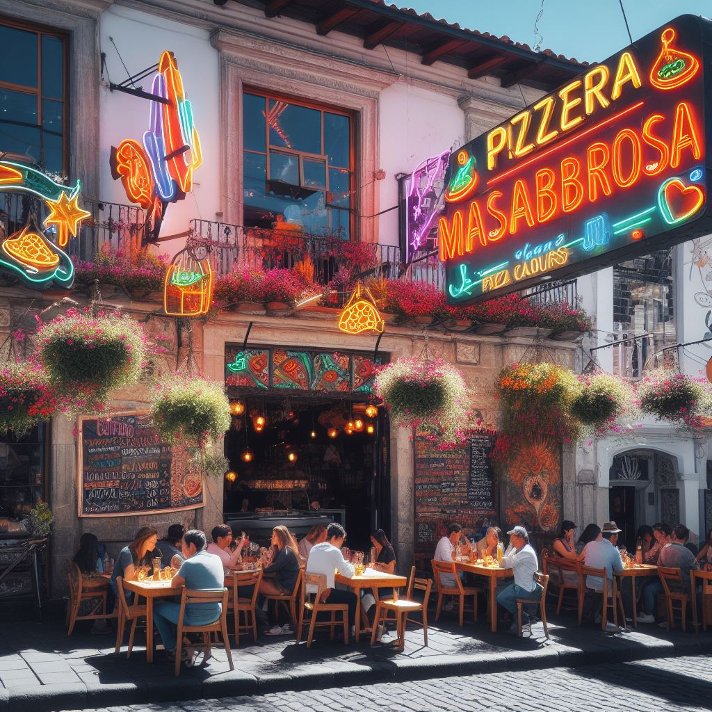
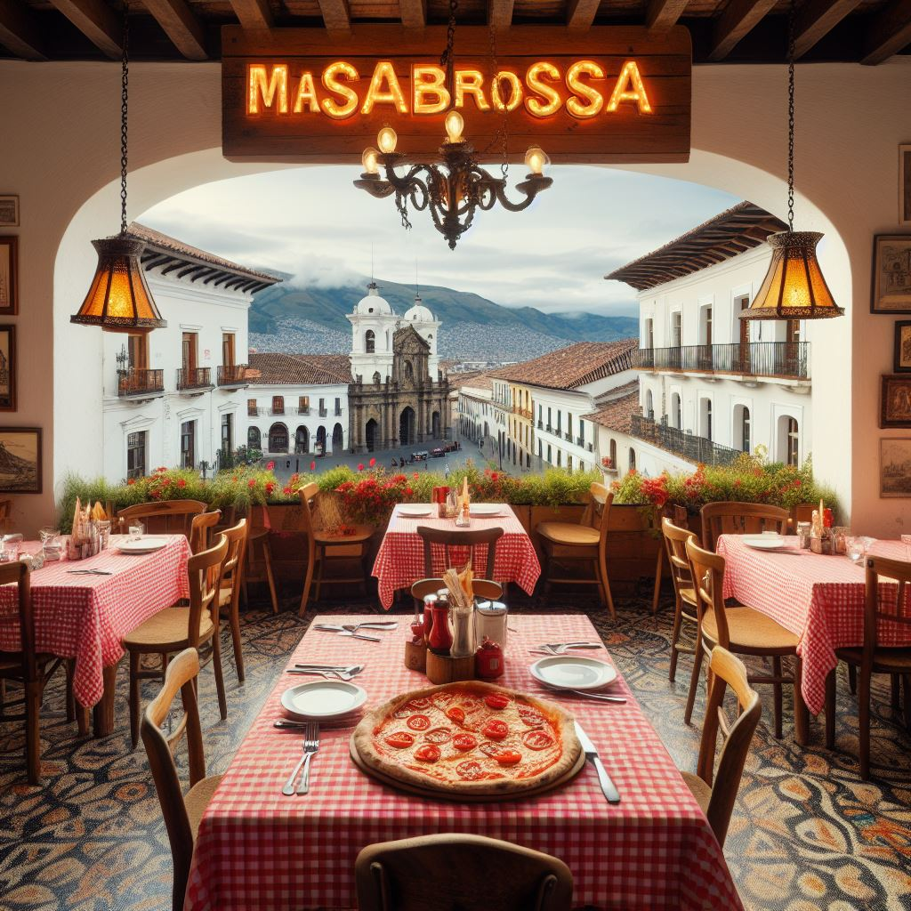
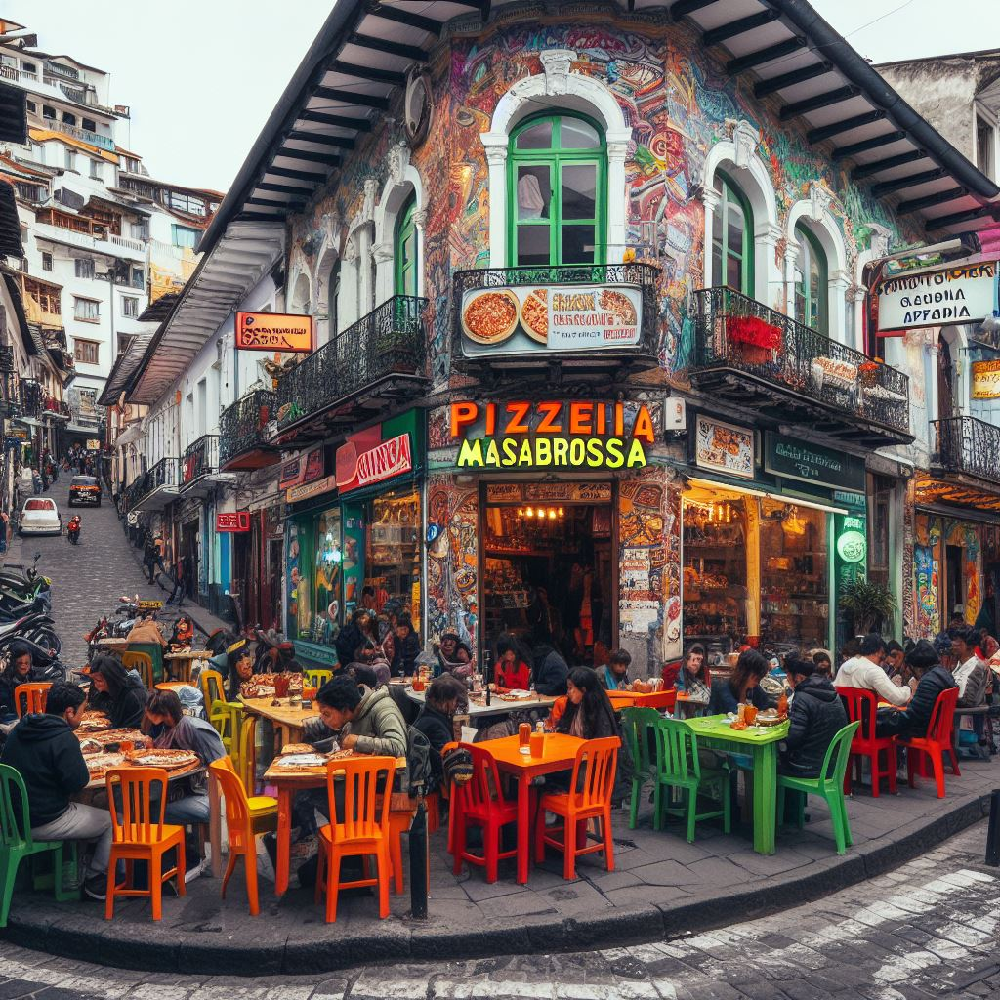

Nuestras Sucursales
Descubre nuestras sucursales y visítanos para disfrutar de la mejor pizza en un ambiente acogedor.
- Sur de Quito
Dirección: Av. del Sabor 1234 La Argelia
- Centro de Quito
Calle Pizza Central 567, Centro Historico
- Norte de Quito
Av. de los Quesos 789, Naciones Unidas